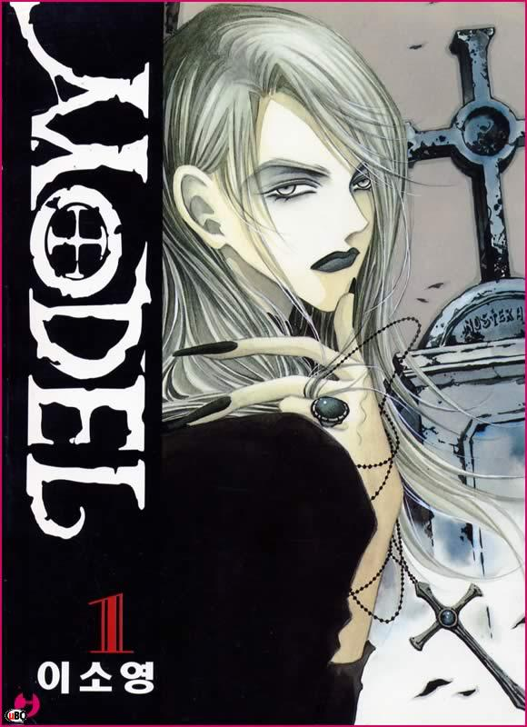

Copyright © 2011 TheMMM.
themmmweb@live.com
themmmweb@live.com



This story is about how a strong willed young female artist gets flung into a situation with a beautiful vampire. The plot circles around Jae (the artist), Micheal (the vampire), Eva (the servant) and Ken (strange young man who lives on the grounds and plays with bats) and their love for each other.There are hints of male love in this series aswell but not majorly. The story is mainly plot, going back and forth between present and past, so it is important to read everything cause if you skip some parts you will be completely lost in the following scenes.I'll not say more or else it will be a spoiler alert.